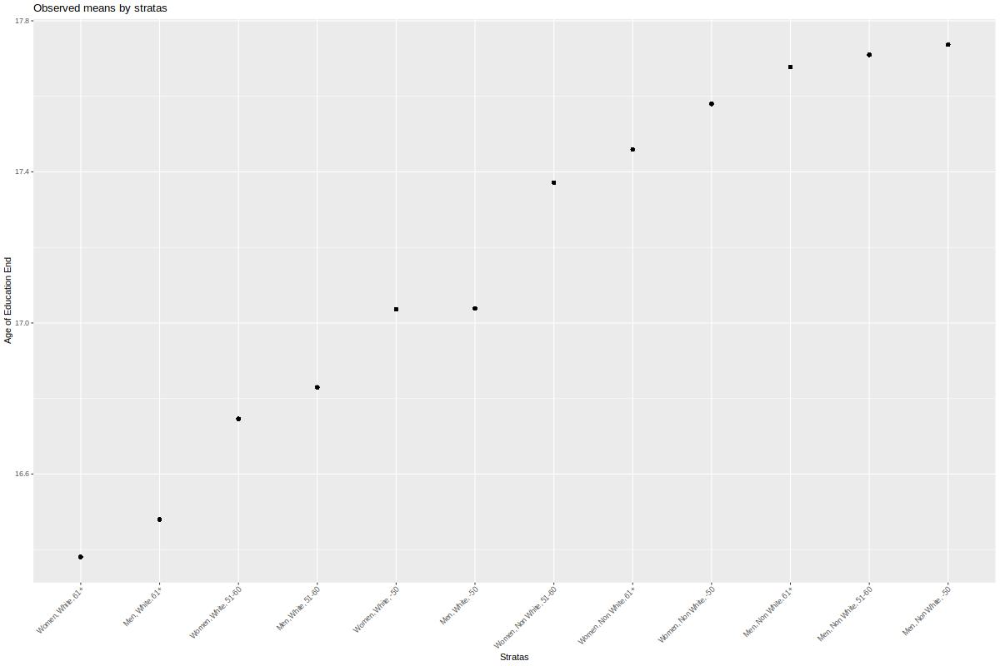
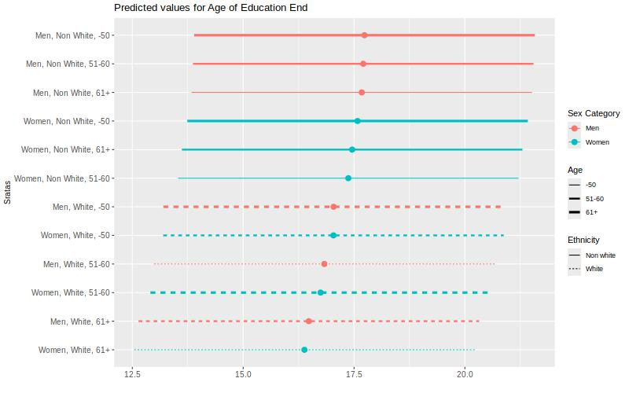

4 Simple example - continous outcome
As a working example, we want to explore intersectional inequalities in education length (a “late” intersectional strata) by early intersectional strata (12 stratas).
4.1 Description
| label | Total N | levels | Short Educ. | Long Educ. |
|---|---|---|---|---|
| Total N (%) | 284626 (56.65) | 217835 (43.35) | ||
| Sex | 502461 (100.0) | Women | 153360 (56.10) | 119994 (43.90) |
| Men | 131266 (57.29) | 97841 (42.71) | ||
| Age_class | 502461 (100.0) | -50 | 63840 (48.31) | 68305 (51.69) |
| 51-60 | 96423 (54.41) | 80799 (45.59) | ||
| 61+ | 124363 (64.41) | 68731 (35.59) | ||
| Ethnicity | 502461 (100.0) | Non White | 10917 (40.38) | 16120 (59.62) |
| White | 273709 (57.57) | 201715 (42.43) |
We can plot the observed means by strata.
jpeg("img/plot_12_quanti.jpeg",
width = 800, height = "500")
mydata %>%
group_by(strata) %>%
mutate(value = mean(AgeEducEnd)) %>%
ggplot(aes(x = fct_reorder(strata,value,.fun='median'),
y =value)) +
geom_point() +
labs(x = "Stratas", y = "Age of Education End",
title = "Observed means by stratas") +
theme(axis.text.x = element_text(angle = 45, vjust=1, hjust=1))
dev.off()## png
## 2
4.2 The null model (only strata)
The null model allows us to estimate the IntraClass correlation (ICC), also known as the Variance Partition Coefficient (VPC), that is the part of the outcome variance that can be explained by the strata.
# multilevel model
m_null <- glmmTMB(AgeEducEnd ~ 1 + (1 | strata),
data = mydata)Outputs of the models:
summary(m_null)## Family: gaussian ( identity )
## Formula: AgeEducEnd ~ 1 + (1 | strata)
## Data: mydata
##
## AIC BIC logLik deviance df.resid
## 2101612 2101645 -1050803 2101606 502458
##
## Random effects:
##
## Conditional model:
## Groups Name Variance Std.Dev.
## strata (Intercept) 0.2157 0.4645
## Residual 3.8366 1.9587
## Number of obs: 502461, groups: strata, 12
##
## Dispersion estimate for gaussian family (sigma^2): 3.84
##
## Conditional model:
## Estimate Std. Error z value Pr(>|z|)
## (Intercept) 17.1696 0.1342 127.9 <2e-16 ***
## ---
## Signif. codes: 0 '***' 0.001 '**' 0.01 '*' 0.05 '.' 0.1 ' ' 1# get the variances:
v_null <- get_variance(m_null)
# between stratas variance:
v_null$var.random## [1] 0.2157245# intraclass correlation
ICC_intersect <- round(icc(m_null)$ICC_unadjusted*100, 2)
ICC_intersect## [1] 5.32Plot of the predicted values by strata:
#plot
predictions <- predict_response(
m_null,
c("strata"),
type = "random")
predictions <- predictions %>%
arrange(predicted)
predictions$rown = rownames(predictions)
predictions$x_lab <- paste0(predictions$rown,".",predictions$x)
predictions$sex <- as.factor(ifelse(grepl("Men", predictions$x), "Men", "Women"))
predictions$ethnicity <- as.factor(ifelse(grepl("Non White", predictions$x), "Non white", "White"))
predictions$age <- as.factor(ifelse(grepl("61+", df$x), "61+",
ifelse(grepl("-50", df$x), "-50","51-60")))
jpeg("img/plot_quanti.jpeg",
width = 800, height = "500")
print(predictions %>%
ggplot(aes(x=predicted, y=fct_reorder(x,predicted,.fun='median'),
color = sex, linetype = ethnicity))+
geom_point(size=3) +
geom_linerange(aes(xmin = conf.low, xmax = conf.high, size = age))+
labs( y = "Sratas",
x = "",
color = "Sex Category",
linetype = "Ethnicity",
size = "Age",
title = paste("Predicted values for Age of Education End"))+
theme(axis.title = element_text(size = 10),
axis.text=element_text(size=10)))+
scale_size_discrete(range = c(0.5, 1.5))
dev.off()## png
## 2
4.3 The variance change
To calculate the (additive) contribution of each category to the total variance, we can estimate the variance change when adjusting for this category. The Proportional Variance Change (PVC) when adjusting for all categories is the portion of ICC/VPC explained by additive effect. Therefore 100% - PVC is the part explained by an intersectional effect .
# models where we add each category one by one
m_gender <- glmmTMB(AgeEducEnd ~ Sex + (1 | strata), data = mydata)
m_ethnicity <- glmmTMB(AgeEducEnd ~ Ethnicity + (1 | strata), data = mydata)
m_age <- glmmTMB(AgeEducEnd ~ Age_class + (1 | strata), data = mydata)
m_full <- glmmTMB(AgeEducEnd ~ Age_class + Ethnicity + Sex + (1 | strata), data = mydata)
v_gender <- get_variance(m_gender)
v_ethnicity <- get_variance(m_ethnicity)
v_age <- get_variance(m_age)
v_full <- get_variance(m_full)
prop_gender <- round(((v_null$var.random - v_gender$var.random) / v_null$var.random)*100,2)
prop_gender <- ifelse(is.null(prop_gender), 0, prop_gender)
prop_ethnicity <- round(((v_null$var.random - v_ethnicity$var.random) / v_null$var.random)*100,2)
prop_ethnicity <- ifelse(is.null(prop_ethnicity), 0, prop_ethnicity)
prop_age <- round(((v_null$var.random - v_age$var.random) / v_null$var.random)*100,2)
prop_age <- ifelse(is.null(prop_age), 0, prop_age)
prop_full <- round(((v_null$var.random - v_full$var.random) / v_null$var.random)*100,2)
prop_full <- ifelse(is.null(prop_full), 100, prop_full)
prop_intersection <- round(100 - prop_full,2)
print(
as.data.frame(
cbind(
parameters = c("ICC/VPC", "% Sex category", "% Age/generation", "% Ethnicity", "%Intersection"),
values = c(ICC_intersect,prop_gender, prop_age, prop_ethnicity,prop_intersection )
)))## parameters values
## 1 ICC/VPC 5.32
## 2 % Sex category 2.59
## 3 % Age/generation 9.55
## 4 % Ethnicity 81.07
## 5 %Intersection 6.62ICC is 5.32%, which is moderate. This differences is mainly explained by ethnicity (81.07%), and, to a lesser extend, age (9.55%) and an intersectional effect (6.62%).